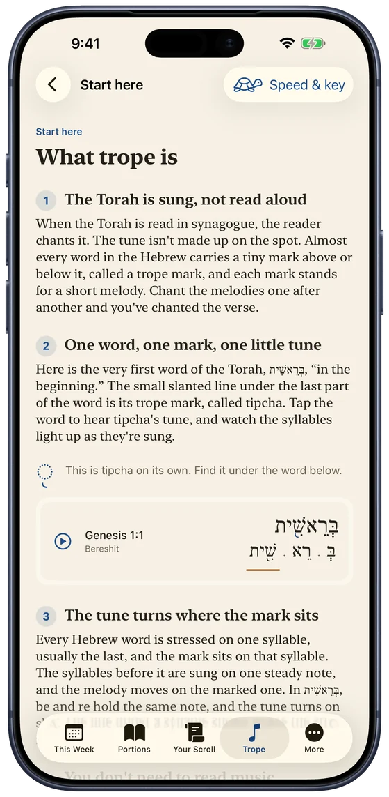
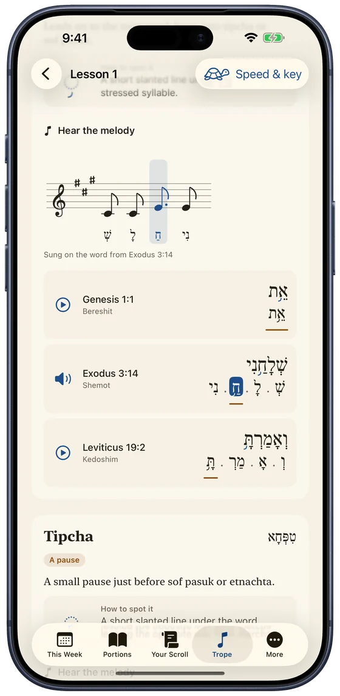
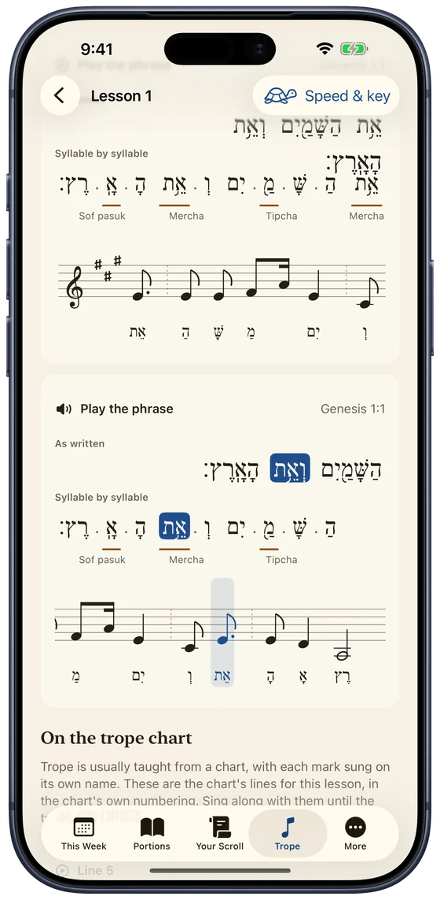

For iPhone and iPad
This week's Torah portion, a few minutes a day.
“Turn it and turn it, for everything is in it.” A rabbi named Ben Bag Bag said that about the Torah nearly two thousand years ago, and it’s where this app gets its name.
Every week brings a new portion to study (or turn over), called the parasha. Torah: Turn It gives you the original text, and different, interesting and relevant ways of studying it, making it applicable to your own life.
The Hebrew is all here, with vowels and even the trope for chanting. You just don’t need it. And if you’d like to chant it, the app teaches you how, starting from the very first mark.
Coming to the App Store for iPhone and iPad.

Every portion, three ways in.
Start wherever you like. You don't need years of Hebrew school behind you, and nothing is watered down.
Overview
- The week's story in a single line, and the whole story when you want it
- A question worth talking about
- Think you know it? The version you learned as a kid, against the text
- Look closer: one surprise in the Hebrew
- What Reform Judaism says, including where it parts ways with the text
Read
- Seven short readings, Sunday through Shabbat
- A few minutes each
- Hebrew and English side by side, with vowels or trope if you like
- Highlight a verse that speaks to you, and add a note
- Your place is always kept
Study
- Questions to work through with a study partner
- Who's who this week
- Why Jews still do this
- The hard parts, faced honestly
- Where the rabbis disagree, and why


Learn trope
Learn to chant it, from the very first mark.
Trope is the melody the Torah is sung to: a tiny mark on almost every word, and each mark is a short tune. Most people only learn it for a bar or bat mitzvah, if at all, and plenty who did have forgotten it. Torah: Turn It teaches the Torah chant used in Reform congregations from scratch, and assumes you’ve never seen a trope mark before.
- Hear every mark played clearly, with each syllable lighting up as it’s sung.
- See it written out the way trope books print it, on a staff that follows along. You don’t need to read music.
- Practice on real verses from all five books, from “In the beginning” to the Shema.
- Your pace, your key. Slow it down while you learn, and move it up or down until it sits comfortably in your voice.
- Ten short lessons, one family of marks at a time, each ending with a quick quiz.
- Hear any verse chanted. Play one verse, carry on through the day’s reading, or repeat a verse until you’ve got it.



Words explain themselves
Tap any underlined word, like midrash or mishkan, for a short explanation in plain English. No word stands in your way.
Your bar or bat mitzvah portion
Enter a birthday and it finds the portion. A good way back to the one you once chanted, or a head start on your child's.
Going to shul
A gentle guide to what happens when the Torah is read, for first-timers and for anyone who never quite liked to ask.
A widget and a Friday note
This week's portion on your Home Screen and, if you'd like, the week's question waiting for you each Friday.
Israel or the diaspora
Some weeks the two calendars read different portions. Tell it where you live and it keeps pace with your community.
Yours alone
No account, no ads, no tracking. Your highlights, notes and progress move between your devices through your own iCloud, and nobody else sees them.
Who made this
I’m Eric Linder, and I’ve been a Reform rabbi for twenty years. For most of that time I’ve been fascinated by what happens when an ancient text meets new tools, and whether a screen can bring people closer to a page that has been read aloud for centuries instead of pulling them away from it.
Torah: Turn It is what I’ve always wanted to hand people: a way into the weekly portion that respects their intelligence, doesn’t assume they remember Hebrew school, and doesn’t skip the hard parts. Every guide is written the way I’d teach a class, and every source is checked.
If you study with it, I’d love to hear how it goes. Write to me from the support page, or come say hello on Discord.
Rabbi Eric Linder